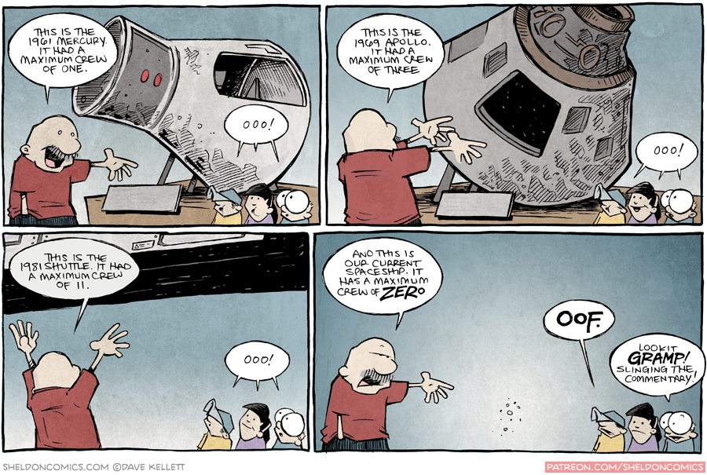

Space
I am a pretty big space fan and I enjoy doing various projects relating to aerospace. I also have a lot of opinions about the commercial aerospace industry specifically, so I guess they might pop up on here once in a while.
Redesigned Mercury Comms Display
Fall 2020
As part of the Aerospace Human Factors Engineering course, taught by Prof. Mike Massimino (our resident astronaut and cool guy), our goal for the course was to work on redesigning a subsystem of the Mercury spacecraft. For what it's worth, the Mercury spacecraft was not very-well designed, and technology has advanced in almost every field such that many of the systems they had at the time could be rendered obsolete.
My partner and I chose to redesign the communications display. Several problems with the initial communications system were that it relied on ground stations for connection (which resulted in frequent blackouts), it did not warn astronauts of approaching losses-of-signal or when they would acquire it, and knowing whether the audio/telemetry sending was on or off was anyone's guess. It was also not clear whether the audio was off due to a scheduled blackout or a system malfunction.
Our solution was to revamp the display to include color-coded indicators for various system states, as well as countdowns until LOS and AOS. The issue of frequent blackouts is solved at a system level, wherein the audio signal connects to geostationary TDRSS satellites which have long been the standard of communication in space.
The Python files are found here. This space display demo uses tkinter and Pillow. The colors of the indicators are as follows:
As part of our project, we also had to design a human factors-focused experiment in order to test the usability and workload of the system.